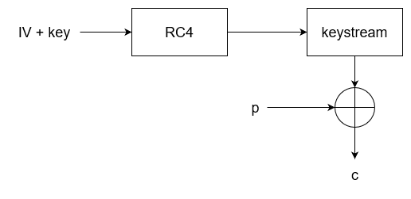

Introduction
Encryption and Message Integrity Checking are paramount to the world of wireless networks, since the radio signals sent by a device are received by every other device in range.
Message Integrity Checks
Message integrity checking ensures that a frame has not been tampered with by an adversary - the message sent by a device should be the same message received by the recipient.
In order to achieve this, a Message Integrity Check (MIC) is calculated by the sender and added to the message. When the recipient receives the message, the recipient also calculates a MIC based on the message. If the MIC in the message does not match the MIC calculated by the recipient, then the frame is discarded.

Encryption Methods
Wireless Equivalent Privacy (WEP)
This is the original encryption method introduced by the 802.11 standard which was later found to be vulnerable and insecure. It supports only two authentication modes - Open System Authentication (OSA) and Shared Key Authentication (SKA).
Under the hood, WEP uses a stream cipher called RC4 with a key and a 24-bit initialisation vector (IV) which is generated anew with every encryption.
The key is static and is set in the AP's configuration. It can be either 40 or 104 bits in length and is combined with the 24-bit IV.
The IV is used in combination with the key to encrypt the packets. The IV should be unique for every frame encrypted, but due to its small size - 24 bits - there are only so many possible IVs. Eventually, IVs will have to be repeated and this is where all hell breaks loose.

Temporal Key Integrity Protocol (TKIP)
This protocol was developed on top of WEP and provides additional security features. Its purpose was to serve as an interim solution to the vulnerabilities in WEP, since hardware at the time was heavily designed around the latter.
It adds a 64-bit MIC to every frame and inside is included sender's MAC address. Furthermore, a timestamp is added to the MIC in order to preclude replay attacks, whereby previously sent frames are retransmitted by an adversary. Moreover a TKIP Sequence Number is used to keep track of frames sent by each source MAC address, which provides further protection against replay attacks.
The IV in TKIP is doubled in size from 24 bits to 48 bits and a Key Mixing Algorithm is implemented in order to generate unique (temporal) WEP keys for every frame.
This encryption method is used by WPA1.
Counter / CBC-MAC Protocol (CCMP)
CCMP was developed after TKIP and, due its higher security, finds its use in WPA2. In order to be used, however, it requires special hardware which is not present in ancient devices.
For encryption, CCMP utilises AES counter mode.
Cipher Block Chaining Message Authentication Code (CBC-MAC) is used as a MIC to ensure the integrity of messages.
Galois / Counter Mode Protocol (GCMP)
This protocol provides even further security than CCMP and is additionally more efficient. It is used in WPA3.
For encryption, GCMP also uses AES counter mode. However, it utilises Galois Message Authentication Code (GMAC) for MICs.